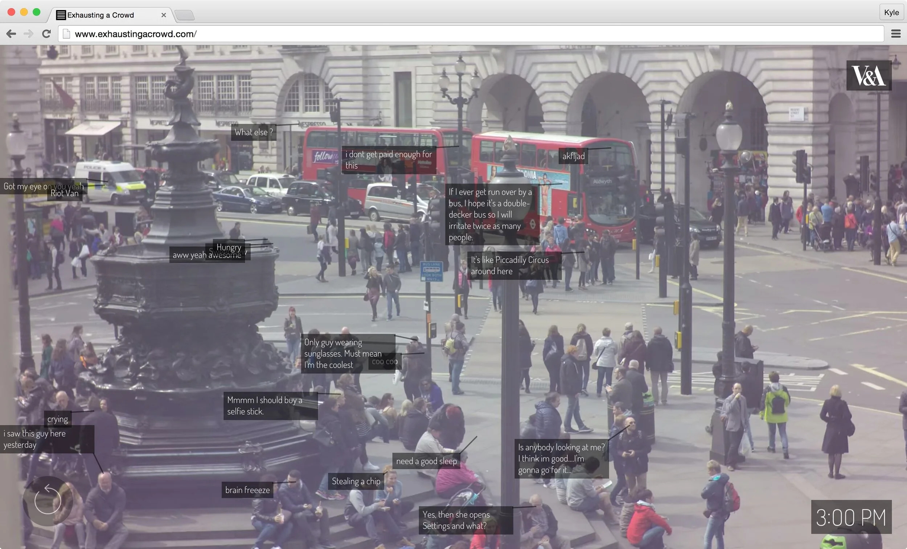

Journal 7
Exhausting a Crowd, and a cloud project that felt familiar

That feels familiar
After a long class of project presentations, many of them really well put together, one in particular stayed with me. Brad's project showed a view of the sky, and anyone could add text to the clouds, guessing what each shape looked like. While watching it, I had the feeling I had seen something like it before, and then it clicked: Exhausting a Crowd. It was one of our readings, a project where surveillance style footage of a public space is open to anyone online, and people can attach notes to what they see. Brad's version took the same structure and pointed it upward, at something no one owns and no one can be watched through. Skyla and I were both really impressed by it.
The original project
Exhausting a Crowd is by Kyle McDonald, made with Jonas Jongejan, and was first commissioned by the Victoria and Albert Museum in 2015. The first version used twelve hours of footage from Piccadilly Circus in London, filmed from 3PM to 3AM. Visitors to the site could click on any person, follow them through the crowd and leave a note. Over time the footage filled up with comments, some observational, many silly, imagining what strangers were thinking or saying to each other. The project has since been repeated in other cities, including Amsterdam, Gwangju, Beijing, Berlin and the Saint-Brieuc version in France, each one a new place to be watched and described.
Collecting everything does not mean understanding anything.
Perec and the impossible task
The title comes from Georges Perec's An Attempt at Exhausting a Place in Paris, a short book he wrote in 1974 while sitting in a square for three days, trying to record everything that usually goes unnoticed: buses, pigeons, people passing by. McDonald turns that into a shared, online version, where the job of describing everything is split among thousands of strangers. It is playful, but it also points to something less comfortable. This is very close to how mass surveillance works, with cameras everywhere and people or software labelling what they see. McDonald has said that this kind of surveillance creates distance rather than understanding, which connects back to Steyerl's essay. Collecting everything does not mean understanding anything. The notes on the footage are often guesses, jokes or assumptions, projected onto people who have no idea they are being described.
From people to clouds
That is why Brad's project felt so clever to me. By replacing a crowd of people with clouds, the surveillance part falls away, but the act of looking and guessing stays. Seeing shapes in clouds is probably the most familiar example of apophenia there is, finding patterns in something that has none. In Exhausting a Crowd, those guesses land on real people, and it can feel a little uneasy. In the sky, they land on nothing at all, and it becomes something gentle and shared. It made me think about how much a project can change by keeping the same structure and changing only what is being looked at.